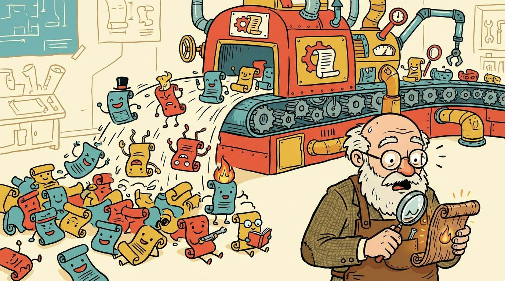
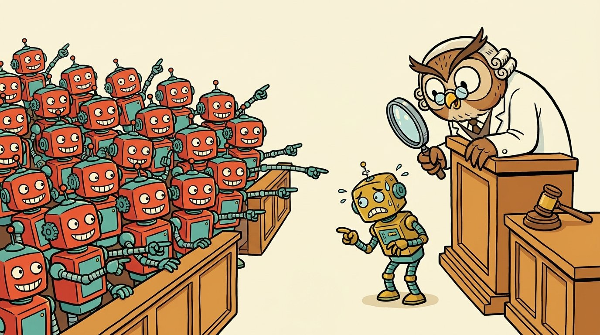
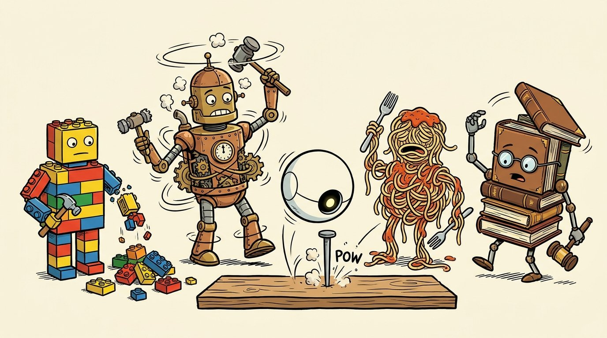
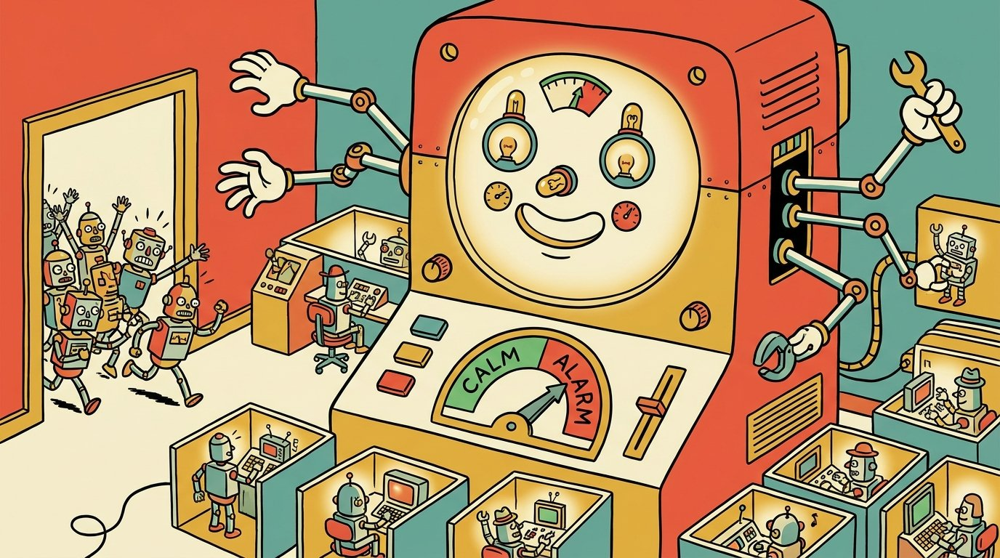
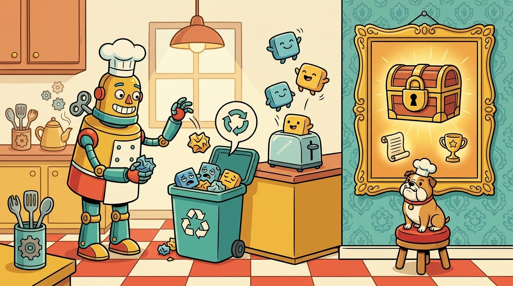

The Future of Software Is Not Better Code. It Is More Code.
Everyone is waiting for AI to write the perfect program. The real revolution starts when programs get so cheap that we stop trusting any single one.

For decades, we have talked about software like it was a factory. Software factories. Production pipelines. Quality control. Continuous delivery.
Then we went back to our desks and hand-carved one program at a time.
We build one system. We try to make it correct. We inspect it, test it, patch it, and ship that one artifact. Even with modern tools, writing software looks less like running a factory and more like building a custom grandfather clock.
AI could finally change this. Just not in the way most people expect.
The popular prediction is simple. AI gets so good at programming that requirements go in and flawless code comes out. Human programmers quietly fade from the picture.
There is another possibility, and it is far more interesting.
AI may industrialize software not by becoming perfectly reliable, but by making software so cheap that we no longer need to trust any single implementation.
1. Factories Don't Need Perfect Workers
Generative AI has an awkward personality trait: it is probabilistic.
Ask the same model to build the same component five times and you get five different answers. One is elegant. One is slow. One is subtly, creatively wrong. Even very capable models make mistakes that look embarrassingly obvious in hindsight.
So most of today's AI engineering tries to tame that randomness. Better models. More context. Sharper specs. Verification. Longer reasoning. All good things, and we should keep doing them.
But the goal hides an assumption. We are forcing a probabilistic technology into an old workflow whose whole purpose is to produce one implementation we can trust.
That workflow existed for an excellent reason: software was expensive. If twenty engineers spent six months on a component, building fifty alternatives would have been financial madness. The rational move was to pour everything into the one version.
AI changes the math. When another implementation costs seconds of compute instead of months of salaries, the question flips.
Stop asking "How do we force the AI to write the right program?" Start asking "Why are we only writing one?"
2. Generate a Population, Not a Program
Picture asking an AI to implement a payment calculation. Or a data transformation, a scheduling algorithm, a gnarly business rule.
Today we keep the best answer and throw the rest away. A future software factory would do the opposite. It would generate hundreds or thousands of implementations.
Not cosmetic rewrites. Genuinely different solutions: different algorithms, different designs, different libraries, maybe even different languages.
Then it would put them all through the wringer. Historical cases, synthetic data, adversarial examples, fuzzing, edge cases, simulated failures, auto-generated tests.
And one signal would be worth more than all the others: disagreement.

Suppose ninety-nine implementations give one answer and the hundredth gives another. We don't automatically know the majority is right. But we have learned something precious: this input exposes uncertainty. That case deserves a spotlight.
The system can generate more tests around it. It can ask more implementations. It can bring in formal checks or a stronger model. It can even breed new implementations designed specifically to settle the argument.
Instead of hunting only for bugs, the factory hunts for disagreement. That is a whole new way to think about quality.
3. Reliability Through Abundance
This sounds wasteful. We are used to thinking of writing software as expensive and running it as cheap. AI flips part of that. When another program is nearly free, quantity becomes an engineering resource.
Other fields figured this out long ago. Aircraft carry redundant sensors. Data centers copy everything. Networks resend lost packets. Biology gets its toughness from massive redundancy, not from perfect cells.
Software never had much of this, because independent versions cost a fortune. The idea itself is old. N-version programming proposed building several independent versions of a component and comparing their outputs. It made sense for safety-critical systems and was far too expensive for everything else.
AI removes exactly the constraint that held it back. For the first time, we can manufacture variety at scale. That gives us two levers for reliability:
- Make every single implementation as likely as possible to be correct.
- Cover the remaining risk with many implementations whose errors are different.
That last word is the whole game. A hundred programs that make the same mistake are just one mistake with a bigger cloud bill.
The real engineering challenge is not code generation. It is making sure the programs fail in different ways.
4. We'll Start Engineering Different Mistakes

Here is a strange but important prediction: future systems will build in variety on purpose.
One version uses one algorithm, another uses something completely different. They come from different models, different prompts, different libraries. Some are deliberately given different information.
One generator aims for simplicity. Another for mathematical rigor. Another for weird inputs. Another for speed.
The goal is not for them to look different. It is for them to fail in different places. And that creates a brand-new software metric. Today we ask whether a component is accurate, fast, secure, maintainable. Tomorrow we will also ask:
How independently does it fail?
A version that is slightly worse on average might be the most valuable member of the team. All it takes is catching the exact cases where all the others fall over.
Variety becomes something we measure, optimize, and manufacture.
5. Testing Never Stops
Now drop the idea that shipping is the end of development.
Today a program passes its tests, goes live, and monitoring waits nervously for something to break. In a population-based system, several versions keep running after launch.
Usually they agree and nothing happens. When they disagree, that disagreement is a live alarm.
Maybe one main version answers while a few others run quietly in the background. If they agree, carry on. If not, the system escalates. It can run more versions, call a more expensive model, fall back to a safe default, or simply pause when the stakes are high.
The disputed case flies straight back to the factory, where new tests and new implementations are born.
The wall between building software and running it starts to dissolve. The system doesn't just run its software. It keeps testing its software while running it.
6. We May Need a Different Kind of Computer

Today's computers are built around one simple idea: load a program and run it fast.
A future machine might be built around populations of programs instead. It would run several versions on the same input and compare the results automatically. Whenever it gets less sure, it throws more compute at the problem:
- Ordinary case: one trusted version runs.
- Unusual case: three run.
- They disagree: ten more join the party.
- Life-or-death decision: dozens weigh in before anything happens.
Compute scales with how unsure we are. The basic model of computing shifts from this:
program + input → output
to something closer to this:
population + input → candidate outputs + confidence
Wasteful? Only if compute stays expensive. We keep trading extra computation for simpler, more reliable systems. Machine learning itself is one giant example of that trade. AI-generated software could push it much further.
7. Code Becomes Disposable
The deepest consequence isn't about reliability. It's about what we consider valuable.
Today a codebase is a treasure. Companies spend years building it, documenting it, and guarding it from careless changes, because it holds an enormous pile of human effort.
But what happens when code itself becomes cheap?

A future software factory would regenerate implementations all the time. Strong versions survive. Weak ones vanish. New ones appear whenever something fails or the requirements change. An implementation might live for a day, an hour, or a single job.
The lasting value moves elsewhere:
- the intent behind the system,
- the rules it must respect,
- the tests it must pass,
- the history of cases it has seen,
- and the evidence about what actually works.
That flips one of software engineering's oldest assumptions. Today, source code is permanent and execution is temporary.
Tomorrow, the specification and the evidence are permanent. The code is temporary.
8. From Software Engineering to Software Manufacturing
This may be what real industrialization of software looks like.
Not an AI that imitates an exceptionally careful human programmer. Not a pipeline that spits out one supposedly perfect codebase. Instead:
intent → mass generation → testing → selection → parallel execution → disagreement detection → regeneration
There may never be a final version. Only a living, shifting population of programs competing, checking one another, and piling up evidence.
That turns AI's randomness from an embarrassing defect into a load-bearing part of the design.
We should still make every generated program as good as we can. Better models, stronger verification, formal methods, and smarter testing all still matter. But perfection may no longer be the only road to reliability.
For seventy years, software engineering has asked one question: how do we write the correct program?
AI lets us ask a very different one.
What if programs become so cheap that we never have to trust any single one?
Illustrations created with AI.